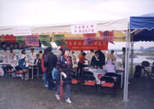

| Panorama d'événements |
|
|
[Taipei] Le 12 mars, le conseil national sportif a rassemblé pour le millénaire, le carnaval sportif de Paintball au parc de Keelung Riverside. Cet évènement avait pour but de renforcer les relations et les liens d'amitié entre les officiels diplomatiques de la R.O.C., les ambassadeurs, les conseillers et les officiels d'affaires culturelles, économiques et étrangères de Taipei. En mettant en avant le jeu de guerre de paintball qui a attiré des participants de plusieurs nationalités, le carnaval a aussi inclus des attractions telles que des cascades de motos, des arts martiaux chinois, des danses, des exercices et des présentations d'arts folkloriques et traditionnels.
L'Association internationale de Maître Suprême Ching Hai était invitée pour offrir des services médicaux gratuits aux participants du carnaval.
Les amis pratiquants, dès leur arrivée sur les lieux, ont immédiatement commencé à mettre les CD de musique de Maître, remplissant ainsi de chaleur et de paix l'atmosphère. Leurs consultations et leurs services médicaux incluaient les prises de tension, des prescriptions de médicaments chinois, des traitements d'acupuncture, des examens ophtalmologiques, des consultations et des chirurgies dentaires.
Au moment où notre groupe a été présenté dans les haut-parleurs, une énorme foule, incluant les visiteurs étrangers, s'est précipitée vers notre stand. Nous avions préparé des chaises pour que les gens puissent attendre dans de bonnes conditions. Nous avons aussi partagé de la nourriture spirituelle sous forme de livrets-échantillons et de revues de Maître. En attendant leur tour, les gens, patiemment, lisaient les livrets-échantillons avec grande attention. Nous étions réellement touchés d'être témoins de l'amour de Dieu flottant gentiment dans leur coeur et leur âme. Chaque visiteur à notre stand a reçu des soins physiques mais aussi de la nourriture spirituelle de l'amour de Dieu.
|  | Les amis pratiquants proposent des services médicaux gratuits aux diplomates locaux et étrangers à Formose. |
[Hsihu] Cette année à Formose, il y avait des congés du 2 au 4 avril. De plus, le 4 avril était le jour du Nettoyage des Tombes. Ce jour-là, les initiés de Formose ont saisi cette opportunité rare pour organiser une retraite spéciale de trois jours au centre de Hsihu, leur permettant ainsi d'assister à la retraite et de s'occuper aussi de leur famille. Les initiés étaient libres d'assister à la retraite un jour, deux jours ou les trois jours. Les familles étaient aussi les bienvenues pour visiter le centre de Hsihu le dimanche. Merci pour cet arrangement flexible. De nombreux initiés ont participé à la retraite, leurs tentes colorées donnaient une atmosphère vivante au centre.
Durant les sessions de méditation assidue des retraitants, les amis initiés ont vraiment pratiqué la coutume du nettoyage des tombes de leurs ancêtres. Pour ceux qui ont reçu l'initiation de Maître et L'ont suivi dans la pratique spirituelle, leurs ancêtres ont depuis longtemps laissé leurs tombes pour un plan supérieur d'existence ou bien, ont déjà été libérés du cycle de la transmigration.
Durant la retraite, les amis initiés ont aussi prié pour le succès de la tournée de conférences de Maître en Océanie et en Asie. Dans ce même but, tous les centres à Formose ont demandé à ce que les amis initiés se rejoignent dans des sessions de méditation journalières à la maison de 5 h à 7 h du matin et de 21 h à 23 h.
|
|